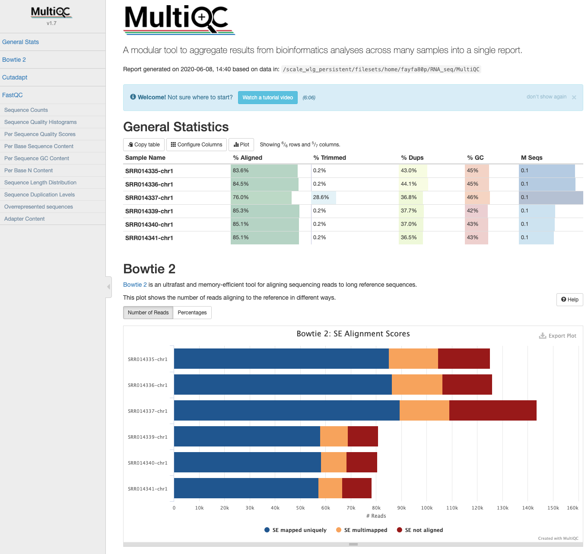
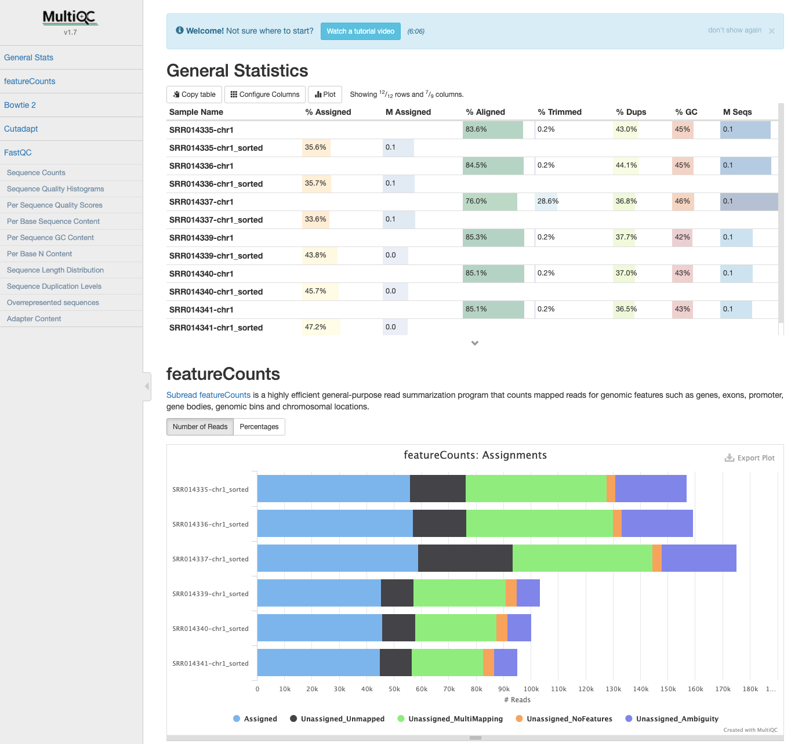

Mapping and Counting¶

Objectives
RNA-seq generate gene expression information by quantifying the number of transcripts (per gene) in a sample. This is accomplished by counting the number of transcripts that have been sequenced - the more active a gene is, the more transcripts will be in a sample, and the more reads will be generated from that transcript.
For RNA-seq, we need to align or map each read back to the genome, to see which gene produced it. - Highly expressed genes will generate lots of transcripts, so there will be lots of reads that map back to the position of that transcript in the genome. - The per-gene data we work with in an RNA-seq experiment are counts: the number of reads from each sample that originated from that gene.
Preparation of the genome¶
To be able to map (align) sequencing reads on the genome, the genome needs to be indexed first. In this workshop we will use HISAT2. Note for speed reason, the reads will be aligned on the chr5 of the Yeast genome.
$ cd /home/$USER/RNA_seq/Genome
#to list what is in your directory:
$ ls /home/$USER/RNA_seq/Genome
Saccharomyces_cerevisiae.R64-1-1.99.gtf Saccharomyces_cerevisiae.R64-1-1.dna.toplevel.fa
$ module load HISAT2/2.2.0-gimkl-2020a
# index file:
$ hisat2-build -p 4 -f Saccharomyces_cerevisiae.R64-1-1.dna.toplevel.fa Saccharomyces_cerevisiae.R64-1-1.dna.toplevel
#list what is in the directory:
$ ls /home/$USER/RNA_seq/Genome
Saccharomyces_cerevisiae.R64-1-1.99.gtf Saccharomyces_cerevisiae.R64-1-1.dna.toplevel.4.ht2 Saccharomyces_cerevisiae.R64-1-1.dna.toplevel.8.ht2
Saccharomyces_cerevisiae.R64-1-1.dna.toplevel.1.ht2 Saccharomyces_cerevisiae.R64-1-1.dna.toplevel.5.ht2 Saccharomyces_cerevisiae.R64-1-1.dna.toplevel.fa
Saccharomyces_cerevisiae.R64-1-1.dna.toplevel.2.ht2 Saccharomyces_cerevisiae.R64-1-1.dna.toplevel.6.ht2
Saccharomyces_cerevisiae.R64-1-1.dna.toplevel.3.ht2 Saccharomyces_cerevisiae.R64-1-1.dna.toplevel.7.ht2
- -p number of threads
- -f fasta file
How many files were created during the indexing process?
Alignment on the genome¶
Now that the genome is prepared. Sequencing reads can be aligned.
Information required:
- Where the sequence information is stored (e.g. fastq files ...) ?
- What kind of sequencing: Single End or Paired end ?
- Where are stored the indexes and the genome?
-
Where will the mapping files be stored?
-
Now, lets move one folder up (into the RNA_seq folder):
Let's map one of our sample to the genome
$ hisat2 -x Genome/Saccharomyces_cerevisiae.R64-1-1.dna.toplevel -U Raw/SRR014335-chr1.fastq -S SRR014335.sam
125090 reads; of these:
125090 (100.00%) were unpaired; of these:
20537 (16.42%) aligned 0 times
85066 (68.00%) aligned exactly 1 time
19487 (15.58%) aligned >1 times
83.58% overall alignment rate
- -x The basename of the index for the reference genome.
- -U Comma-separated list of files containing unpaired reads to be aligned
- -S File to write SAM alignments to. By default, alignments are written to the “standard out” or “stdout” filehandle
Now we need to align all the rest of the samples.
let's use a for loop to process our samples:
$ cd Trimmed
$ ls
SRR014335-chr1.fastq SRR014336-chr1.fastq SRR014337-chr1.fastq SRR014339-chr1.fastq SRR014340-chr1.fastq SRR014341-chr1.fastq
$ for filename in *
> do
> base=$(basename ${filename} .trimmed.fastq)
> hisat2 -p 4 -x ../Genome/Saccharomyces_cerevisiae.R64-1-1.dna.toplevel -U $filename -S ../Mapping/${base}.sam --summary-file ../Mapping/${base}_summary.txt
> done
Now we can explore our SAM files.
$ cd ../Mapping
$ ls
SRR014335-chr1.sam SRR014336-chr1_summary.txt SRR014339-chr1.sam SRR014340-chr1_summary.txt
SRR014335-chr1_summary.txt SRR014337-chr1.sam SRR014339-chr1_summary.txt SRR014341-chr1.sam
SRR014336-chr1.sam SRR014337-chr1_summary.txt SRR014340-chr1.sam SRR014341-chr1_summary.txt
Converting SAM files to BAM files¶
The SAM file, is a tab-delimited text file that contains information for each individual read and its alignment to the genome. While we do not have time to go into detail about the features of the SAM format, the paper by Heng Li et al. provides a lot more detail on the specification.
The compressed binary version of SAM is called a BAM file. We use this version to reduce size and to allow for indexing, which enables efficient random access of the data contained within the file.
A quick look into the sam file¶
$ less SRR014335-chr1.sam
The file begins with a header, which is optional. The header is used to describe the source of data, reference sequence, method of alignment, etc., this will change depending on the aligner being used. Following the header is the alignment section. Each line that follows corresponds to alignment information for a single read. Each alignment line has 11 mandatory fields for essential mapping information and a variable number of other fields for aligner specific information. An example entry from a SAM file is displayed below with the different fields highlighted.
We will convert the SAM file to BAM format using the samtools program with the view command
$ module load SAMtools/1.10-GCC-9.2.0
$ for filename in *.sam
> do
> base=$(basename ${filename} .sam)
> samtools view -S -b ${filename} -o ${base}.bam
> done
- -S input is in SAM format (it's here as a placeholder as SAMtoools version 1.10 or above will pick up the correct format automatically by examining the first few characters of input.)
- -b Output is in BAM format
$ ls
SRR014335-chr1.bam SRR014336-chr1.bam SRR014337-chr1.bam SRR014339-chr1.bam SRR014340-chr1.bam SRR014341-chr1.bam
SRR014335-chr1.sam SRR014336-chr1.sam SRR014337-chr1.sam SRR014339-chr1.sam SRR014340-chr1.sam SRR014341-chr1.sam
Next we sort the BAM file using the sort command from samtools. -o tells the command where to write the output.
SAM/BAM files can be sorted in multiple ways, e.g. by location of alignment on the chromosome, by read name, etc. It is important to be aware that different alignment tools will output differently sorted SAM/BAM, and different downstream tools require differently sorted alignment files as input.
$ for filename in *.bam
> do
> base=$(basename ${filename} .bam)
> samtools sort -o ${base}_sorted.bam ${filename}
> done
You can use samtools to learn more about the bam file as well.
Some stats on your mapping:¶
$ samtools flagstat SRR014335-chr1_sorted.bam
156984 + 0 in total (QC-passed reads + QC-failed reads)
31894 + 0 secondary
0 + 0 supplementary
0 + 0 duplicates
136447 + 0 mapped (86.92% : N/A)
0 + 0 paired in sequencing
0 + 0 read1
0 + 0 read2
0 + 0 properly paired (N/A : N/A)
0 + 0 with itself and mate mapped
0 + 0 singletons (N/A : N/A)
0 + 0 with mate mapped to a different chr
0 + 0 with mate mapped to a different chr (mapQ>=5)
flagstat will be slightly different from those in the summary file generated by HISAT2 due to different "totals" that are used for comparisons. flagstat compares the number of alignments; HISAT2 compares the number of reads mapped. This is because reads can be mapped/aligned to more than one reference location, and these reads have a "primary" and "secondary" alignment (see section 1.2 of the SAM specifications). For example, the percent overall alignment in the HISAT2 summary will be equivalent to the percent primary mapped evaluated by flagstat. To get number of reads that aligned 0 times (summary file), the equivalent statistic from flagstat would be subtracting the number of mapped reads from the number of total alignments.
MultiQC: HISAT2 output¶
- The HISAT2 output data can also be incorporated into the MultiQC report the next time it is run.

Please note: running HISAT2 with either option --summary-file or older versions (< v2.1.0) gives log output identical to Bowtie2. These logs are indistinguishable and summary statistics will appear in MultiQC reports labelled as Bowtie2.
Read Summarization¶
Sequencing reads often need to be assigned to genomic features of interest after they are mapped to the reference genome. This process is often called read summarization or read quantification. Read summarization is required by a number of downstream analyses such as gene expression analysis and histone modification analysis. The output of read summarization is a count table, in which the number of reads assigned to each feature in each library is recorded.
Counting¶
- We need to do some counting!
- Want to generate count data for each gene (actually each exon) - how many reads mapped to each exon in the genome, from each of our samples?
- Once we have that information, we can start thinking about how to determine which genes were differentially expressed in our study.
Subread and FeatureCounts¶
- The featureCounts tool from the Subread package can be used to count how many reads aligned to each genome feature (exon).
- Need to specify the annotation information (.gtf file) You can process all the samples at once:
$ module load Subread/2.0.0-GCC-9.2.0
$ pwd
/home/$USER/RNA_seq
$ mkdir Counts
$ cd Counts
$ featureCounts -a ../Genome/Saccharomyces_cerevisiae.R64-1-1.99.gtf -o ./yeast_counts.txt -T 2 -t exon -g gene_id ../Mapping/*sorted.bam
Arguments: * -a Name of an annotation file. GTF/GFF format by default * -o Name of output file including read counts * -T Specify the number of threads/CPUs used for mapping. 1 by default * -t Specify feature type in GTF annotation. 'exon' by default. Features used for read counting will be extracted from annotation using the provided value. * -g Specify attribute type in GTF annotation. 'gene_id' by default. Meta-features used for read counting will be extracted from annotation using the provided value.
MultiQC: featureCounts output¶
- If the samples are processed individually, the output data can be incorporated into the MultiQC report the next time it is run.

Since we now have all the count data in one file, we need to transfer it to our local computers so we could start working on RStudio to get differentially expressed genes.
- And the code to do it is below, however for this workshop, we are going to use a different file (yeast_counts_all_chr.txt) that you can download from section 4. Differential_Expression. This file has all the data for all the chromosomes.
#In a new terminal that you can access you computer files, cd to the directory you want to save the counts file.
$ scp fayfa80p@login.mahuika.nesi.org.nz:/home/fayfa80p/RNA_seq/Counts/yeast_counts_all_chr.txt ./